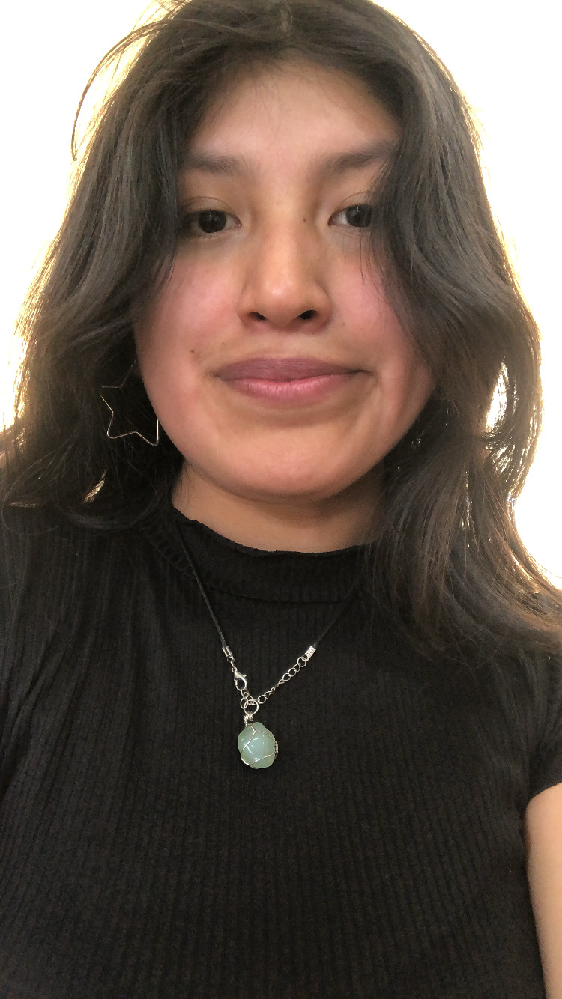

HOLAM
I'm Alsnj20
a Student
Mi nombre es Mariel Jara tengo 18 años, naci el 20 de octubre del 2005 en la hermosa ciudad de Arequipa, Perú y estudió la carrera de Ingenieria de Sistemas en la UNSA (Universidad Nacional De San Agustín), actualmente en el 3er semestre, soy una persona dedicada a lo que hace y que está en aprendizaje constante,
MOOD
trabajando en metas y logros propios.
